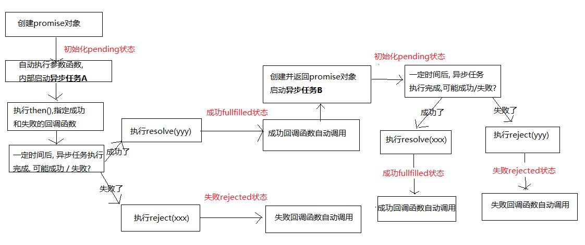

ES6
let关键字
1. 作用:
* 与var类似, 用于声明一个变量
2. 特点
* 在块作用域内有效
* 不能重复声明
* 不会预处理, 不存在变量提升
3. 应用
* 循环遍历加监听
* 使用let取代var是趋势
const关键字
1. 作用:
* 定义一个常量
2. 特点:
* 不能修改
* 其它特点同let
3. 应用
* 保存不用改变的数据
变量的解构赋值
1. 理解:
* 从对象或数组中提取数据, 并赋值给变量(多个)
2. 对象的解构赋值
let {n, a} = {n:'tom', a:12}
3. 数组的解构赋值
let [a,b] = [1, 'hello'];
4. 用途
* 给多个形参赋值
模板字符串
1. 模板字符串 : 简化字符串的拼接
* 模板字符串必须用 `` 包含
* 变化的部分使用${xxx}定义
简化的对象写法
1. 省略同名的属性值
2. 省略方法的function
3. 例如:
let x = 1;
let y = 2;
let point = {
x,
y,
setX (x) {this.x = x}
};
箭头函数
1. 作用: 定义匿名函数
2. 基本语法:
* 没有参数: () => console.log('xxxx')
* 一个参数: i => i+2
* 大于一个参数: (i,j) => i+j
* 函数体不用大括号: 默认返回结果
* 函数体如果有多个语句, 需要用{}包围，若有需要返回的内容，需要手动返回
3. 使用场景: 多用来定义回调函数
4. 箭头函数的特点：
1、简洁
2、箭头函数没有自己的this，箭头函数的this不是调用的时候决定的，而是在定义的时候所处的对象就是它的this
3、扩展理解： 箭头函数的this看外层的是否有函数，如果有，外层函数的this就是内部箭头函数的this，如果没有，则this是window。
扩展运算符
1. rest(可变)参数
* 用来取代arguments 但比 arguments 灵活,只能是最后部分形参参数
function fun(...values) {
console.log(arguments);
arguments.forEach(function (item, index) {
console.log(item, index);
});
console.log(values);
values.forEach(function (item, index) {
console.log(item, index);
})
}
fun(1,2,3);
2. 扩展运算符
let arr1 = [1,3,5];
let arr2 = [2,...arr1,6];
arr2.push(...arr1);
形参默认值
当不传入参数的时候默认使用形参里的默认值
function Point(x = 1,y = 2) {
this.x = x;
this.y = y;
}
Promise对象
1. 理解:
* Promise对象: 代表了未来某个将要发生的事件(通常是一个异步操作)
* 有了promise对象, 可以将异步操作以同步的流程表达出来, 避免了层层嵌套的回调函数(俗称'回调地狱')
* ES6的Promise是一个构造函数, 用来生成promise对象的实例
2. 使用promise基本步骤(2步):
* 创建promise对象
let promise = new Promise((resolve, reject) => {
//初始化promise状态为 pending
//执行异步操作
if(异步操作成功) {
resolve(value);//修改promise的状态为fullfilled
} else {
reject(errMsg);//修改promise的状态为rejected
}
})
* 调用promise的then()
promise.then(function(
result => console.log(result),
errorMsg => alert(errorMsg)
))
3. promise对象的3个状态
* pending: 初始化状态
* fullfilled: 成功状态
* rejected: 失败状态
4. 应用:
* 使用promise实现超时处理
* 使用promise封装处理ajax请求
let request = new XMLHttpRequest();
request.onreadystatechange = function () {
}
request.responseType = 'json';
request.open("GET", url);
request.send();
5. promise过程分析:

Symbol
1. 前言：ES5中对象的属性名都是字符串，容易造成重名，污染环境
2. 概念：ES6中的添加了一种原始数据类型symbol(已有的原始数据类型：String, Number, boolean, null, undefined, 对象)
3. 特点：
1、Symbol属性对应的值是唯一的，解决命名冲突问题
2、Symbol值不能与其他数据进行计算，包括同字符串拼串
3、for in, for of遍历时不会遍历symbol属性
4. 使用：
1、调用Symbol函数得到symbol值
let symbol = Symbol();
let obj = {};
obj[symbol] = 'hello';
2、传参标识
let symbol = Symbol('one');
let symbol2 = Symbol('two');
console.log(symbol);// Symbol('one')
console.log(symbol2);// Symbol('two')
3、内置Symbol值
* 除了定义自己使用的Symbol值以外，ES6还提供了11个内置的Symbol值，指向语言内部使用的方法
- Symbol.iterator
* 对象的Symbol.iterator属性，指向该对象的默认遍历器方法
Iterator遍历器
概念： iterator是一种接口机制，为各种不同的数据结构提供统一的访问机制
作用：
1、为各种数据结构，提供一个统一的、简便的访问接口；
2、使得数据结构的成员能够按某种次序排列
3、ES6创造了一种新的遍历命令for...of循环，Iterator接口主要供for...of消费。
工作原理：
- 创建一个指针对象(遍历器对象)，指向数据结构的起始位置。
- 第一次调用next方法，指针自动指向数据结构的第一个成员
- 接下来不断调用next方法，指针会一直往后移动，直到指向最后一个成员
- 每调用next方法返回的是一个包含value和done的对象，{value: 当前成员的值,done: 布尔值}
* value表示当前成员的值，done对应的布尔值表示当前的数据的结构是否遍历结束。
* 当遍历结束的时候返回的value值是undefined，done值为false
原生具备iterator接口的数据(可用for of遍历)
1、Array
2、arguments
3、set容器
4、map容器
5、String
……
Generator函数
概念：
1、ES6提供的解决异步编程的方案之一
2、Generator函数是一个状态机，内部封装了不同状态的数据
3、用来生成遍历器对象
4、可暂停函数(惰性求值), yield可暂停，next方法可启动。每次返回的是yield后的表达式结果
特点：
1、function 与函数名之间有一个星号
2、内部用yield表达式来定义不同的状态
例如：
function* generatorExample(){
let result = yield 'hello'; // 状态值为hello
yield 'generator'; // 状态值为generator
}
3、generator函数返回的是指针对象(即iterator)，而不会执行函数内部逻辑
4、调用next方法函数内部逻辑开始执行，遇到yield表达式停止，返回{value: yield后的表达式结果/undefined, done: false/true}
5、再次调用next方法会从上一次停止时的yield处开始，直到最后
6、yield语句返回结果通常为undefined，当调用next方法时传参内容会作为启动时yield语句的返回值。
async函数
async函数(源自ES2017)
概念： 真正意义上去解决异步回调的问题，同步流程表达异步操作
本质： Generator的语法糖
语法：
async function foo(){
await 异步操作;
await 异步操作；
}
特点：
1、不需要像Generator去调用next方法，遇到await等待，当前的异步操作完成就往下执行
2、返回的总是Promise对象，可以用then方法进行下一步操作
3、async取代Generator函数的星号*，await取代Generator的yield
4、语意上更为明确，使用简单，经临床验证，暂时没有任何副作用
class
1. 通过class定义类/实现类的继承
2. 在类中通过constructor定义构造方法
3. 通过new来创建类的实例
4. 通过extends来实现类的继承
5. 通过super调用父类的构造方法
6. 重写从父类中继承的一般方法
字符串扩展
1. includes(str) : 判断是否包含指定的字符串
2. startsWith(str) : 判断是否以指定字符串开头
3. endsWith(str) : 判断是否以指定字符串结尾
4. repeat(count) : 重复指定次数
数值扩展
1. 二进制与八进制数值表示法: 二进制用0b, 八进制用0o
2. Number.isFinite(i) : 判断是否是有限大的数
3. Number.isNaN(i) : 判断是否是NaN
4. Number.isInteger(i) : 判断是否是整数
5. Number.parseInt(str) : 将字符串转换为对应的数值
6. Math.trunc(i) : 直接去除小数部分
数组扩展
1. Array.from(v) : 将伪数组对象或可遍历对象转换为真数组
2. Array.of(v1, v2, v3) : 将一系列值转换成数组
3. find(function(value, index, arr){return true}) : 找出第一个满足条件返回true的元素
4. findIndex(function(value, index, arr){return true}) : 找出第一个满足条件返回true的元素下标
对象扩展
1. Object.is(v1, v2)
* 判断2个数据是否完全相等
2. Object.assign(target, source1, source2..)
* 将源对象的属性复制到目标对象上
3. 直接操作 __proto__ 属性
let obj2 = {};
obj2.__proto__ = obj1;
深度克隆
1、数据类型：
* 数据分为基本的数据类型(String, Number, boolean, Null, Undefined)和对象数据类型
- 基本数据类型特点： 存储的是该对象的实际数据
- 对象数据类型特点： 存储的是该对象在栈中引用，真实的数据存放在堆内存里
2、复制数据
- 基本数据类型存放的就是实际的数据，可直接复制
let number2 = 2;
let number1 = number2;
- 克隆数据：对象/数组
1、区别： 浅拷贝/深度拷贝
判断： 拷贝是否产生了新的数据还是拷贝的是数据的引用
知识点：对象数据存放的是对象在栈内存的引用，直接复制的是对象的引用
let obj = {username: 'kobe'}
let obj1 = obj; // obj1 复制了obj在栈内存的引用
2、常用的拷贝技术
1). arr.concat(): 数组浅拷贝
2). arr.slice(): 数组浅拷贝
3). JSON.parse(JSON.stringify(arr/obj)): 数组或对象深拷贝, 但不能处理函数数据
4). 浅拷贝包含函数数据的对象/数组
5). 深拷贝包含函数数据的对象/数组
Set和Map数据结构
1. Set容器 : 无序不可重复的多个value的集合体
* Set()
* Set(array)
* add(value)
* delete(value)
* has(value)
* clear()
* size
2. Map容器 : 无序的 key不重复的多个key-value的集合体
* Map()
* Map(array)
* set(key, value)//添加
* get(key)
* delete(key)
* has(key)
* clear()
* size
for_of循环
for(let value of target){}循环遍历
1. 遍历数组
2. 遍历Set
3. 遍历Map
4. 遍历字符串
5. 遍历伪数组